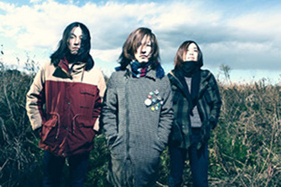

KUDANZ

Member
ササキゲン(Vo)
Follow @kudanznoboyaki
ツイートする
Profile
2008年、ササキゲンを中心に仙台で結成。
エレキギター弾き語りのソロ、アコースティックセット、3ピース、四人編成など、形態は様々。
現在はササキゲンのソロプロジェクトとして活動中。
ARABAKI ROCK FEST.12等、各地フェス・イベントにフェスに出演し話題を呼ぶ。
2012/4/11にはKUDANZ歌集「僕とターヘルアナトミア」をリリースし、全国ツアー「子供達は踊らない」を開催。
Comment
KUDANZこと、ササキゲンでございます。
この度はお誘い頂きありがとうございます。
「ロックの夜明け」
僕自身の音楽がロックかというと、実際のところよくわかりません。
単なる「歌」だなと思います。悪い意味ではなくて。
嘘ばっかり聞かされてきた僕達の潔癖さと、「嘘＝夢」の混同した会話にのまれていく人達。
日常に溢れるファンタジーに気づかなくなっていってしまう人達。
それでも目線を変えだけで、長靴は大きな塔になるし、水たまりには巨大な怪獣アメンボがいるし、雑草は鬱蒼とした森です。
僕は単なる「歌」を歌いに行きます。
それが誰かの「夜明け＝きっかけ」になったら、僕は飛び跳ねて喜び、泥んこになって帰ります。
当日来られる皆様、どうぞ楽しんで帰って下さい。
KUDANZ
YouTube
［ programs ］
Link
Official Web Site
この度はお誘い頂きありがとうございます。
「ロックの夜明け」
僕自身の音楽がロックかというと、実際のところよくわかりません。
単なる「歌」だなと思います。悪い意味ではなくて。
嘘ばっかり聞かされてきた僕達の潔癖さと、「嘘＝夢」の混同した会話にのまれていく人達。
日常に溢れるファンタジーに気づかなくなっていってしまう人達。
それでも目線を変えだけで、長靴は大きな塔になるし、水たまりには巨大な怪獣アメンボがいるし、雑草は鬱蒼とした森です。
僕は単なる「歌」を歌いに行きます。
それが誰かの「夜明け＝きっかけ」になったら、僕は飛び跳ねて喜び、泥んこになって帰ります。
当日来られる皆様、どうぞ楽しんで帰って下さい。
KUDANZ